Configuration Guide
Set up and operate the Semantic Cache platform from zero to first cached response.
What is Semantic Caching?
Semantic Caching stores the meaning of user queries — not just the text. It converts prompts into vector embeddings and measures how conceptually similar two requests are. If the similarity score exceeds a threshold, the cached response is returned instantly. Otherwise, the request flows to the LLM, and the new response is cached for future matches.
Benefits
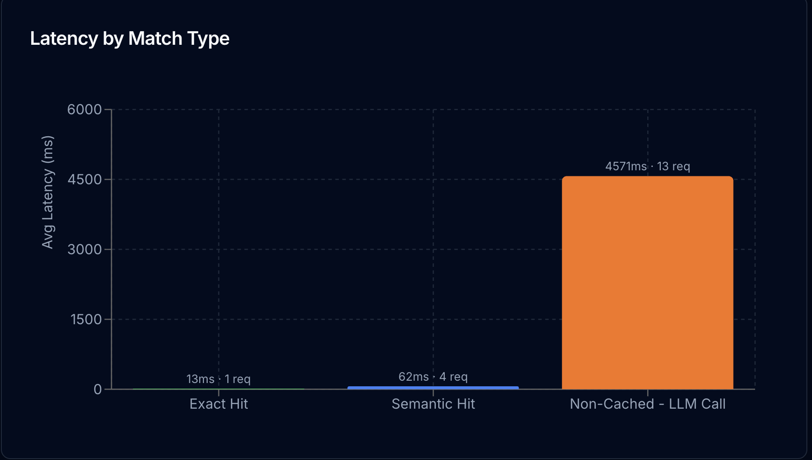
Where It Fits: The AI Gateway
The AI Gateway is the natural home for semantic caching — the centralized point where all LLM traffic flows. It intercepts, embeds, and matches queries before they reach the model. Faster responses, lower costs, reduced GPU pressure — all in one layer, without changing application code.
| Cached Query | Response |
|---|---|
1. Sign Up
- Navigate to your instance URL (Right click and open in new tab http://48.200.15.121:3000/login) → click the Sign Up tab.
- Enter Full Name, Work Email, Password → click Create Account (or use Google / Microsoft SSO).
- Your organization is auto-created from your email domain (e.g.,
example.com).
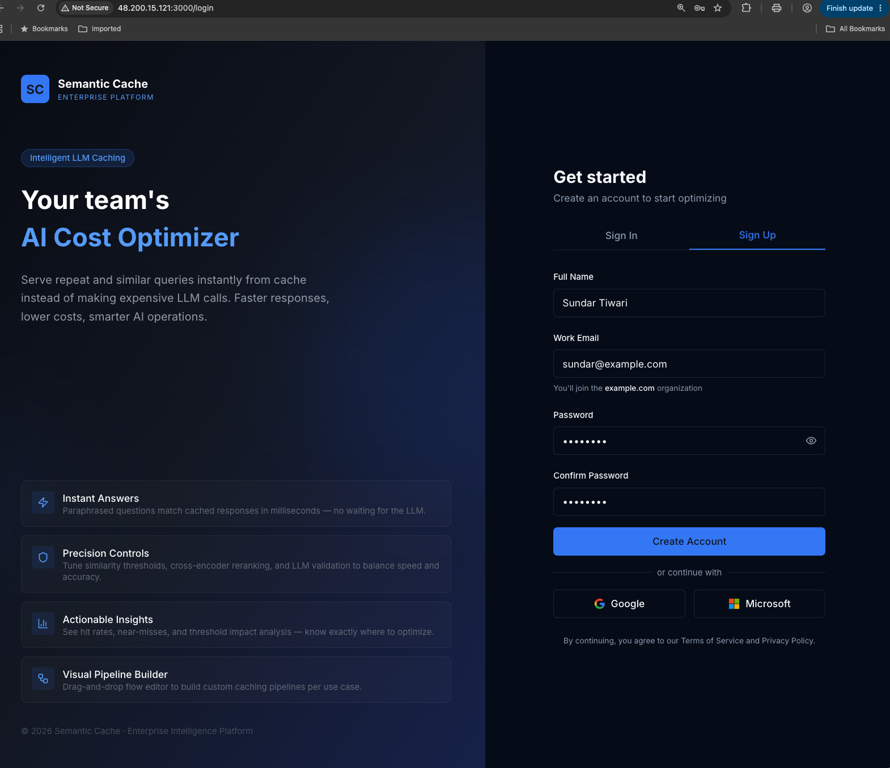
2. Configure LLM Model
- On first login, a Product Tour dialog appears — click Yes to walk through the UI.
- Click Settings in the left sidebar to configure your LLM model.
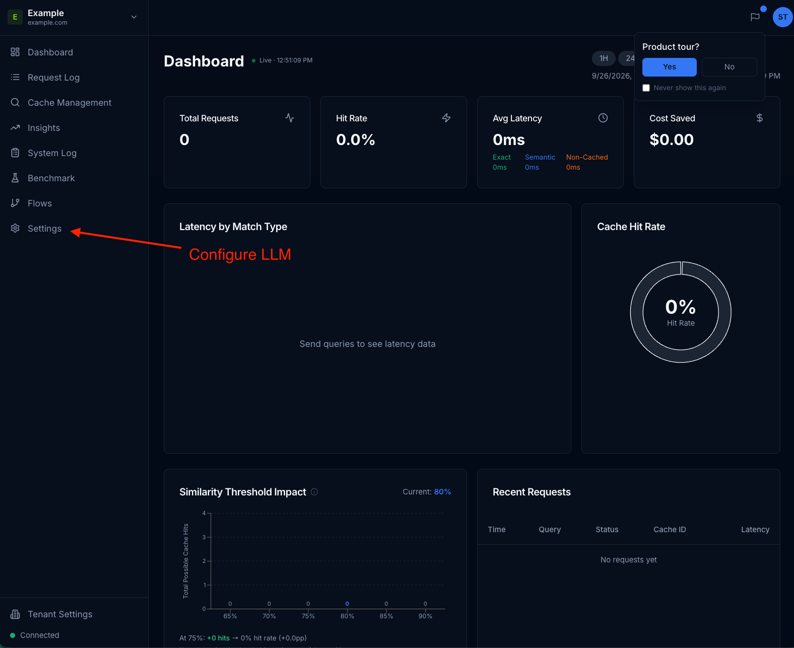
3. Add Model (LLM Model)
- Click Settings → select the Model Configuration tab.
- Click + Add Model (top-right).
- Backend LLM handles cache misses. Validator LLM verifies cache hits (use a fast, cheap model).
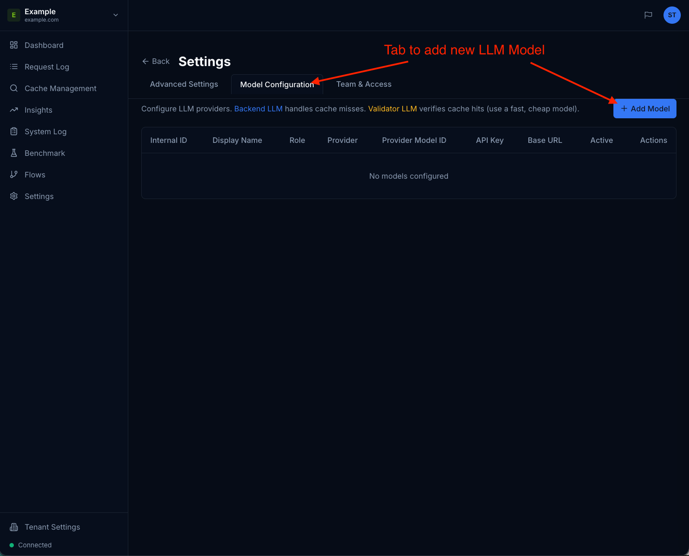
4. Choose LLM Provider & API Key
- Select Provider (e.g.,
Anthropic) → set Role to Backend LLM — handles cache misses. - Pick Model ID (e.g.,
claude-sonnet-5) → enter a Display Name. - Paste your API Key from the LLM provider (e.g., Anthropic, OpenAI).
API Key: sk-ant-••••••••••••••••••••••••••••••••Paste your own key from your provider's dashboard. Keys are encrypted at rest and never displayed in full after saving.
- Base URL auto-fills (e.g.,
https://api.anthropic.com/v1); leave it unless you use a proxy. - Check Active → click Save.
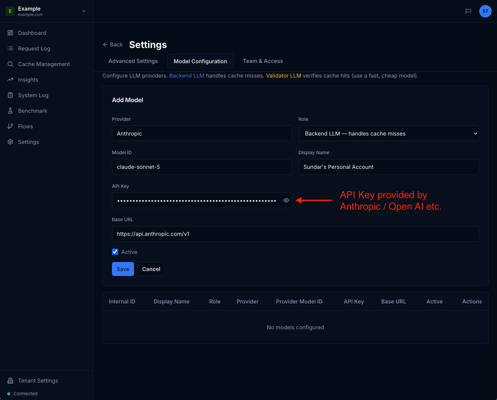
5. Connect Semantic Cache to External Application
- After saving, the model appears in the table with Internal ID, Display Name, Role, Provider, Model ID, and masked API key.
- Click Tenant Settings (bottom of sidebar) to get the API endpoint and API key for connecting external applications.
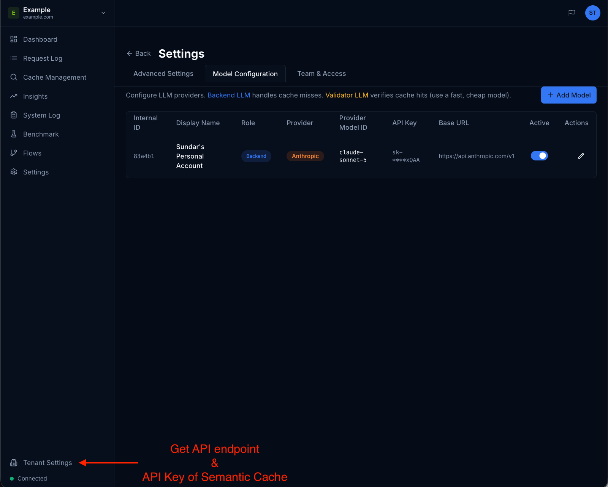
6. Create API Key
- Under API Keys, click + Create Key → copy the
sk-sc-...key immediately. - Copy the API Endpoint URL shown at the bottom of the page (e.g.,
http://48.200.15.121:3000/v1). - The page also displays your Organization ID, Slug, Domain, WebSocket URL, and Cache Collection name.
- A Configuration summary at the bottom shows current Similarity Threshold, Embedding Model, Cache TTL, and other active settings.
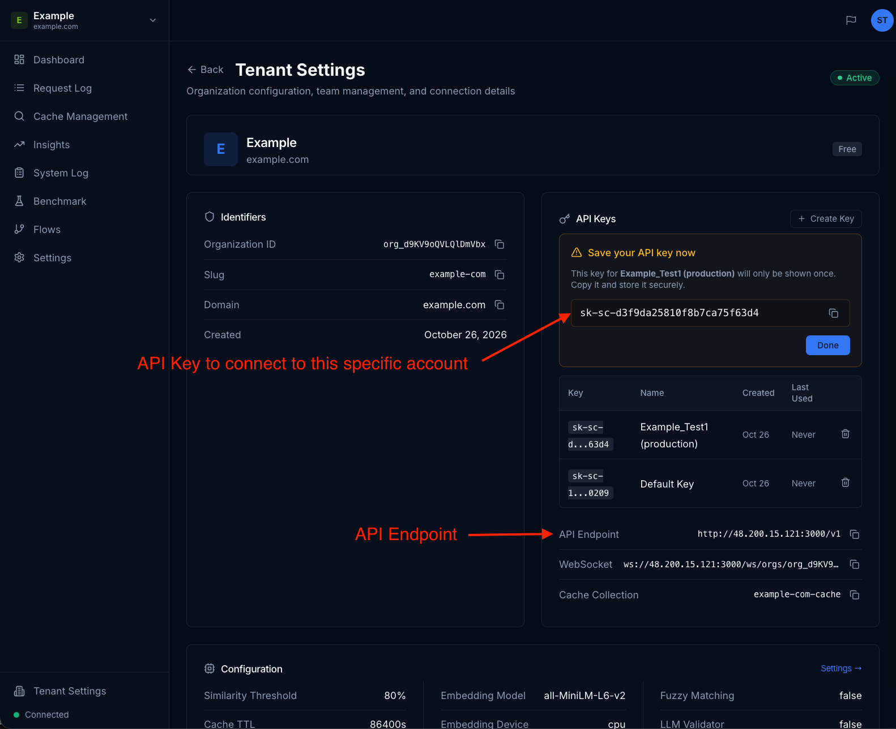
7. Semantic Cache Demo: Register Organization
- Open the Semantic Cache Demo app — (Right click and open in new tab http://4.154.166.117 )
- Click Manage (top-right) to register a new organization.
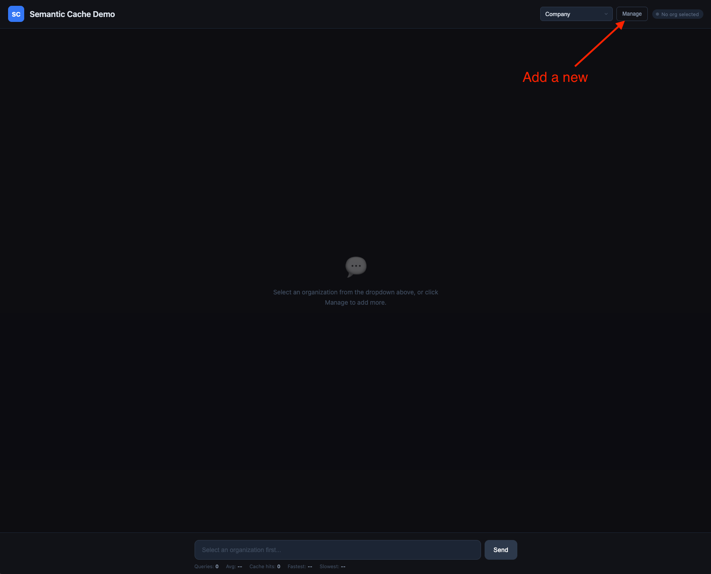
8. Connect Demo App
- Enter Organization Name (e.g.,
Example). - Paste the API Endpoint and API Key from Step 6 → click Register.
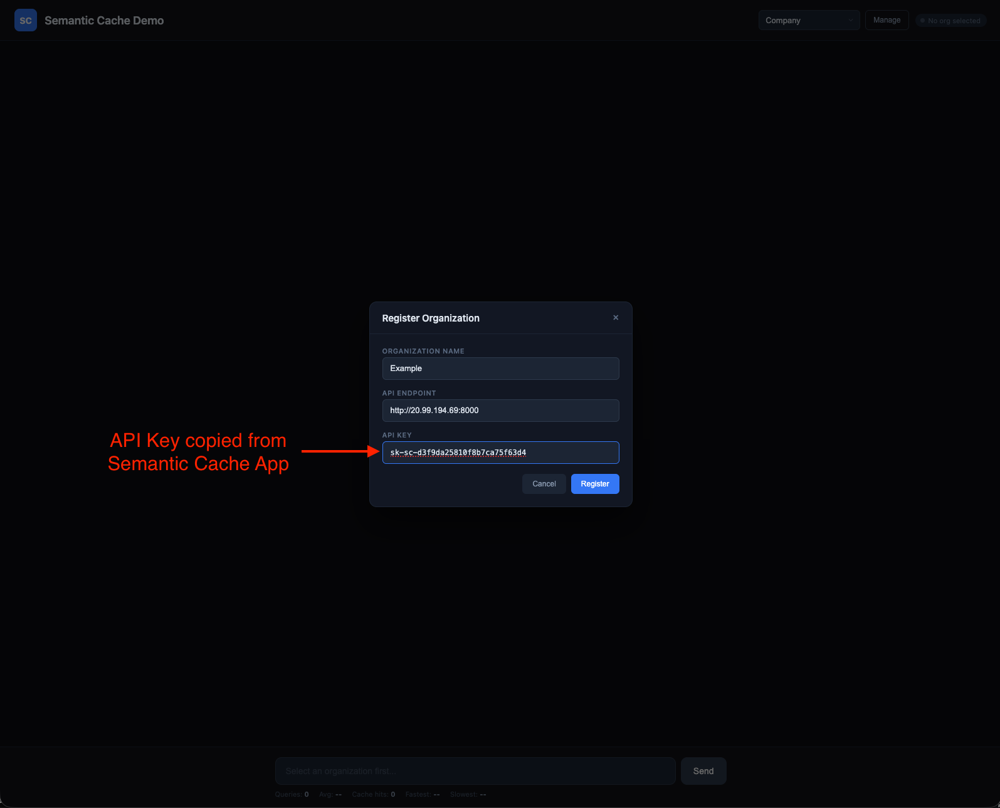
9. Select Organization
- Once registration completes, open the dropdown (top-right) → select the newly created organization.
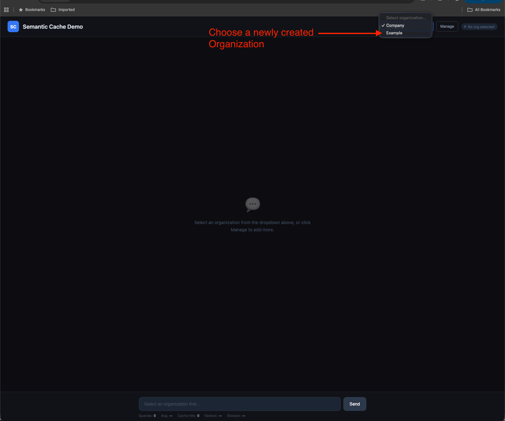
10. Semantic Cache in Action
- Start communicating with the application.
- Ask a question (e.g., "What's a capital of Italy?") — first query goes to the LLM (~1.0s).
- Ask a similar question (e.g., "Is Rome a capital of Italy?") — served from semantic cache (~79ms, marked Cached).
- The similar text goes through semantic cache and doesn't require LLM calls.
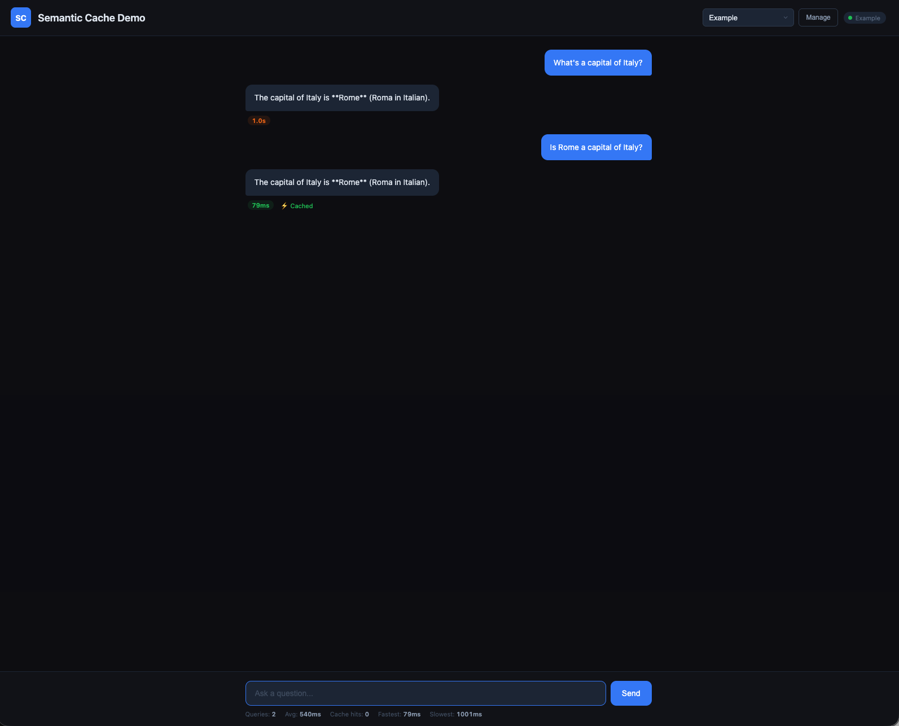
11. Dashboard & Performance
- Top row: Total Requests, Hit Rate (%), Avg Latency (Exact / Semantic / Non-Cached), Cost Saved ($).
- Latency by Match Type: compare Semantic Hit latency vs. Non-Cached LLM Call.
- Cache Hit Rate: donut chart with current hit percentage.
- Similarity Threshold Impact: hits at each threshold level — current threshold highlighted blue.
- Recent Requests: live table with Time, Query, Status, Cache ID, Latency.
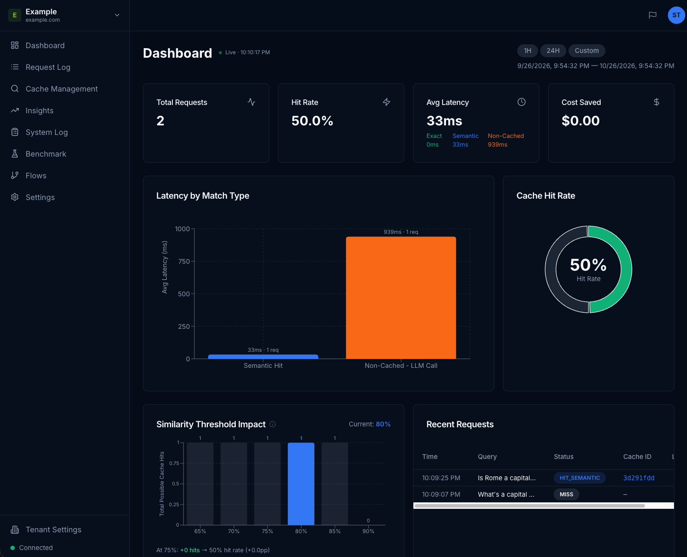
12. Request Logs
- Click Request Log in the sidebar.
- Summary bar: clickable cards for Total, Exact Hits, Semantic Hits, Near Misses, Misses, Avg Similarity.
- Filter by status: All, HIT_EXACT, HIT_SEMANTIC, MISS, NEAR_MISS.
- Table columns: Timestamp, Query, Status, Similarity (%), Cache ID, Latency, Served By.
- Click any row to expand: see Cache Match Details with candidates, similarity scores, and Reviewer Actions.
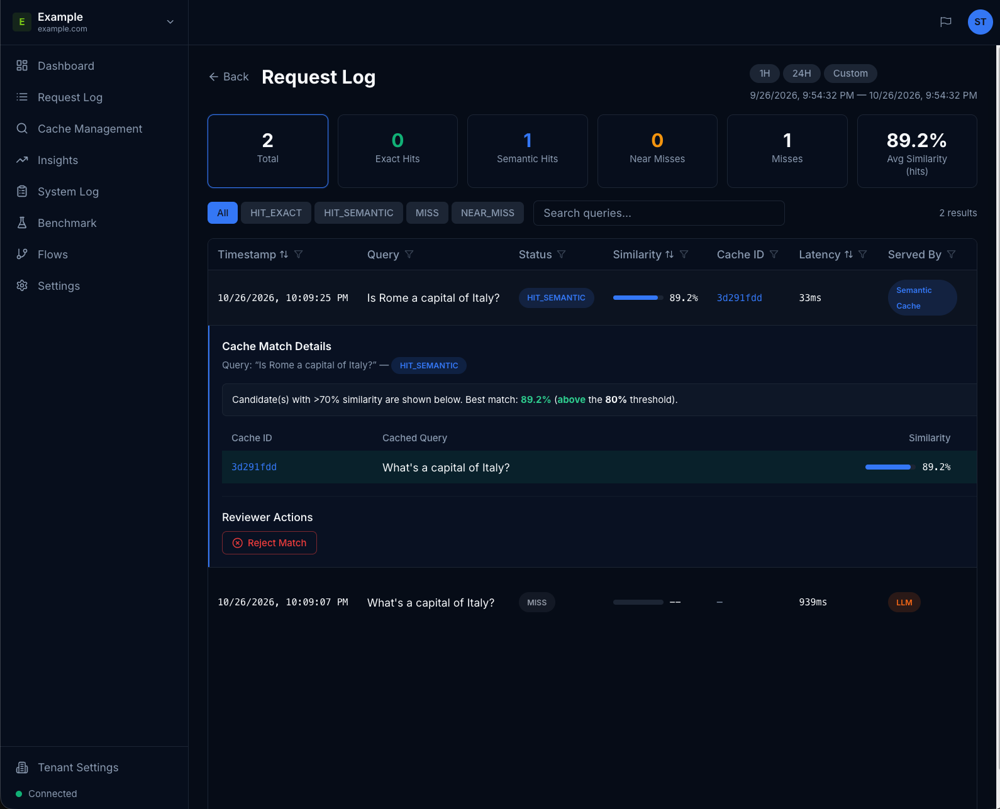
13. Cache Management
- Click Cache Management in the sidebar.
- Filter by Semantic Cache or Prompt Cache, and search by query text.
- Table columns: Cache ID, Query, Hit Count, Last Hit On, Created At, Namespace, Model.
- Click any row to expand: see full query, response preview, metadata (Cache ID, Model, Namespace, Hit Count, Last Hit On, Created At, TTL Remaining), and Delete button.
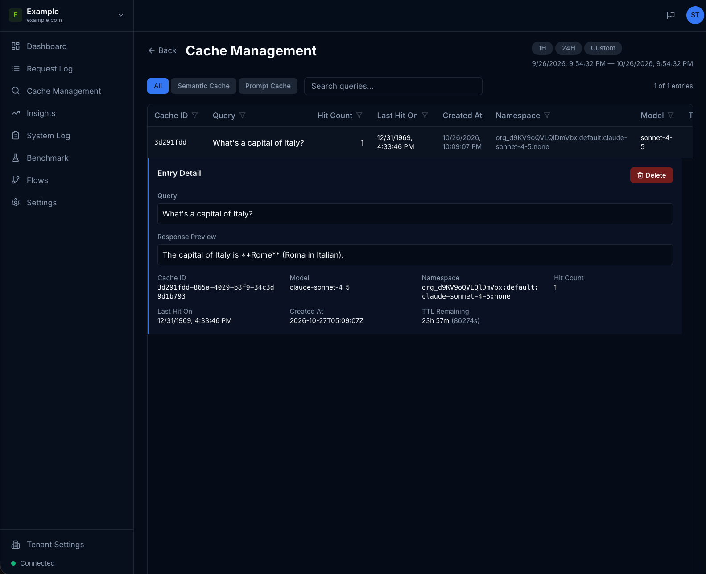
14. Insights
- Click Insights in the sidebar.
- Metrics: Cache Hit Rate (CHR), Precision, Recall, F1 Score.
- Threshold Optimization: shows near-miss analysis — if lowering the threshold would help, a recommendation card appears.
- Matching Quality: based on reviewer actions from Request Logs.
- Link to Configure cache settings → Settings for quick access.
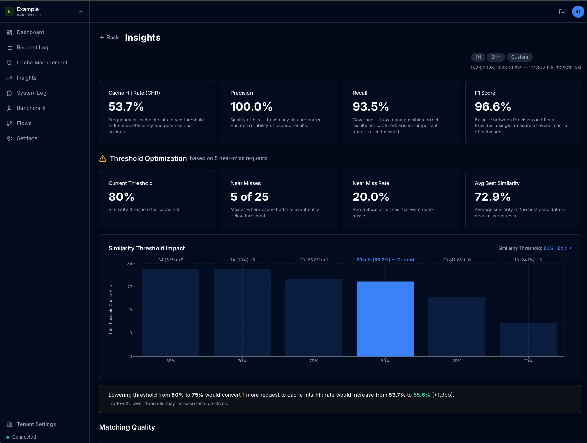
15. System Logs
- Click System Log in the sidebar.
- Audit trail of all configuration changes: filter by Settings, Model Config, Organization, API Keys.
- Table columns: Timestamp, Category, Action, Target, Details, Changed By.
- Click any row to expand: see Previous Value, New Value, Details, IP Address, Action ID, and Log ID.
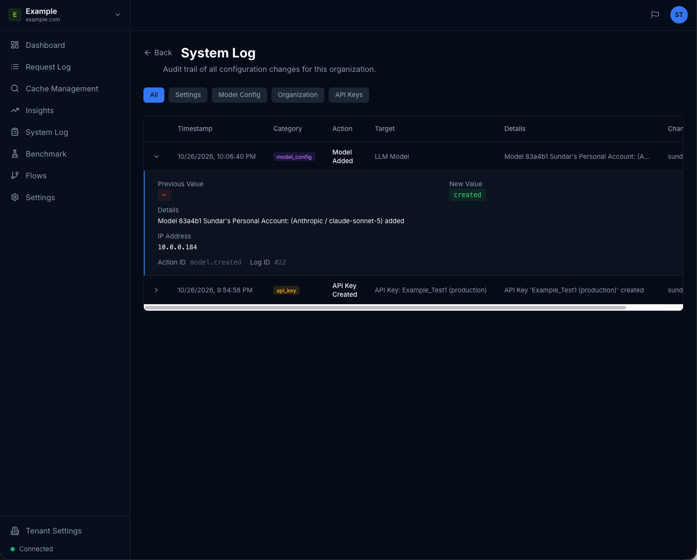
16. Advanced Settings
- Click Settings → select the Advanced Settings tab.
- Cache Settings: Cache TTL (seconds), Max Cache Entries, Similarity Threshold (%) slider (60–100%).
- Context Settings: Code Detection and Temporal Context Detection toggles.
- Efficiency Settings: Fuzzy Matching toggle and Fuzzy Match Sensitivity threshold.
- Embedding Settings: configure the embedding model and device.
- Click Save to apply changes.
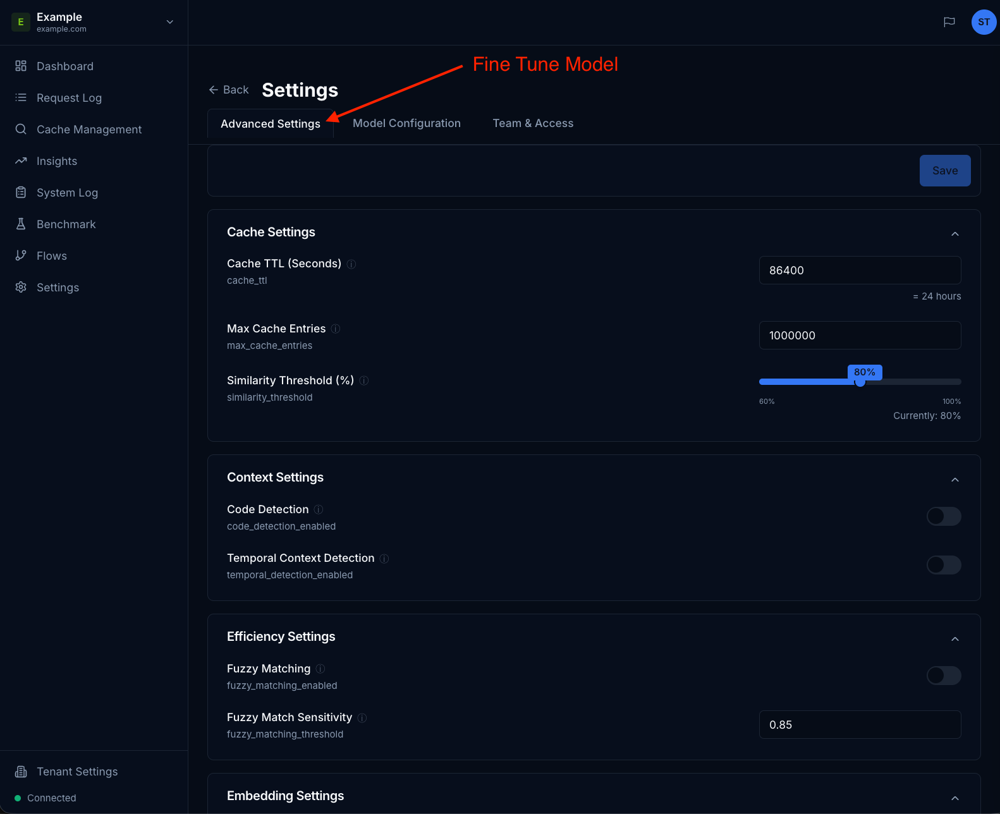